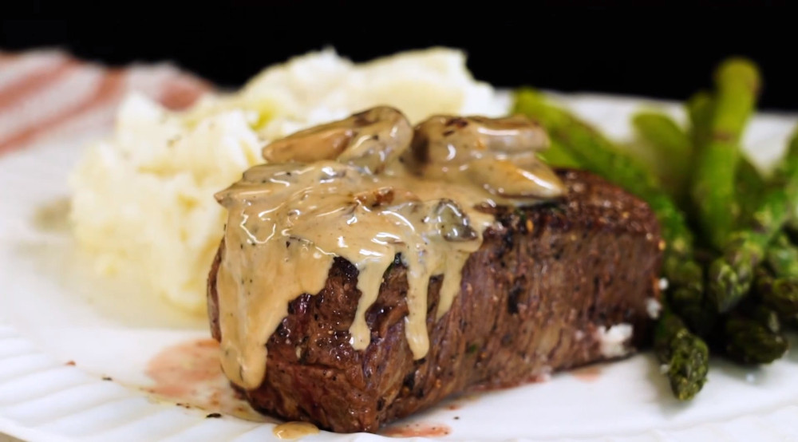

Perfect Pan Seared Filet Mignon

Description
This elegant filet mignon recipe, complete with a creamy mushroom pan sauce, is the perfect choice for any special occasion.
Ingredients
Steak:
- 2 (8 ounce) filet mignon steaks
- 2 teaspoons kosher salt
- 1 teaspoon freshly ground black pepper
- 2 tablespoons olive oil
- 2 tablespoons butter or herb butter (optional)
Mushroom Pan Sauce
- 2 tablespoons butter
- 18 (8 ounce) packages sliced baby portobello mushrooms
- 1/4 cup white wine
- 1 teaspoon Worcestershire sauce
- 1/2 cup heavy cream
- freshly cracked black pepper
- 2 teaspoons freshly squeezed lemon juice
Steps
- Allow steaks to sit at room temperature 30 minutes before cooking.
- Preheat the oven to 425 degrees F (220 degrees C).
- Heat oil in a large oven-proof skillet over high heat. Season one side of steaks liberally with salt and pepper in an even layer. Place filets seasoned side down into the skillet and cook, undisturbed until a rich golden brown crust has formed, about 3 minutes. Season the other side with salt and pepper and flip the steaks. Cook 2 minutes longer and then move the skillet to the preheated oven.
- Cook in the preheated oven 2 to 3 minutes longer for rare, about 4 minutes for medium-rare, 5 to 7 minutes for medium, about 8 minutes for medium well and 1 to 2 more minutes for well done.
- Remove steaks from the skillet. Add butter if desired and tent with foil. Allow steak to rest for 10 minutes before serving.
- Meanwhile, return skillet to the stovetop over medium-high heat and melt 2 tablespoons butter in the drippings. Add mushrooms and cook, stirring often, until browned, about 5 minutes. Pour in wine to deglaze skillet and scrape the bottom with a wooden spoon to loosen any browned bits.
- Cook until the liquid is mostly evaporated. Stir in cream, Worcestershire sauce, and pepper and bring mixture to a simmer, stirring often. Reduce heat to medium-low and cook until slightly thickened, about 2 minutes. Season with more salt if desired. Stir in lemon juice and serve mushroom sauce with filet mignon.